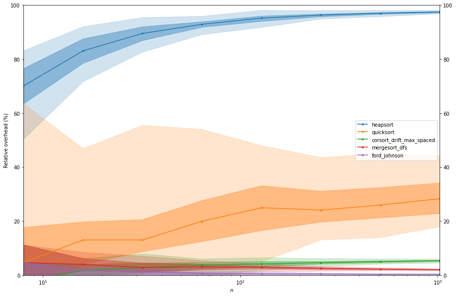

Termination times
This notebook shows how to use the corsort package to determine the average termination time of several sorting algorithms.
Here the following sorts will be compared:
Heapsort
Quicksort
Corsort
Mergesort
Ford-Johnson
First we load some packages.
[1]:
import numpy as np
from matplotlib import pyplot as plt
from multiprocess.pool import Pool
from corsort import (
evaluate_comparisons, auto_colors, entropy_bound,
SortFordJohnson, SortMergeDfs, SortQuick,
WrapFullJit, jit_corsort_drift_max_spaced, jit_heapsort
)
We populate the list of sorts we want to study.
[2]:
sort_list = [WrapFullJit(jit_heapsort), SortQuick(), WrapFullJit(jit_corsort_drift_max_spaced),
SortMergeDfs(), SortFordJohnson()]
We decide the values of \(n\) to study and the number of trials. For this notebook, we limit to \(100\) trials but for better quality 10,000 is recommended (takes a bit more time).
[3]:
n_list = [2**i for i in range(3, 11)]
n_t = 100
We now run the experiments, with some multi-processing to speed-up things.
[4]:
with Pool() as p:
comparisons = evaluate_comparisons(n_list=n_list, sort_list=sort_list, nt=n_t, pool=p)
Evaluate comparisons of heapsort for n = 8
100%|██████████| 100/100 [00:03<00:00, 31.23it/s]
Evaluate comparisons of quicksort for n = 8
100%|██████████| 100/100 [00:00<00:00, 2021.14it/s]
Evaluate comparisons of corsort_drift_max_spaced for n = 8
100%|██████████| 100/100 [00:04<00:00, 22.43it/s]
Evaluate comparisons of mergesort_dfs for n = 8
100%|██████████| 100/100 [00:00<00:00, 1899.51it/s]
Evaluate comparisons of ford_johnson for n = 8
100%|██████████| 100/100 [00:00<00:00, 2491.88it/s]
Evaluate comparisons of heapsort for n = 16
100%|██████████| 100/100 [00:00<00:00, 930.74it/s]
Evaluate comparisons of quicksort for n = 16
100%|██████████| 100/100 [00:00<00:00, 2144.56it/s]
Evaluate comparisons of corsort_drift_max_spaced for n = 16
100%|██████████| 100/100 [00:00<00:00, 850.86it/s]
Evaluate comparisons of mergesort_dfs for n = 16
100%|██████████| 100/100 [00:00<00:00, 2498.75it/s]
Evaluate comparisons of ford_johnson for n = 16
100%|██████████| 100/100 [00:00<00:00, 2560.53it/s]
Evaluate comparisons of heapsort for n = 32
100%|██████████| 100/100 [00:00<00:00, 783.34it/s]
Evaluate comparisons of quicksort for n = 32
100%|██████████| 100/100 [00:00<00:00, 2442.25it/s]
Evaluate comparisons of corsort_drift_max_spaced for n = 32
100%|██████████| 100/100 [00:00<00:00, 730.45it/s]
Evaluate comparisons of mergesort_dfs for n = 32
100%|██████████| 100/100 [00:00<00:00, 2098.90it/s]
Evaluate comparisons of ford_johnson for n = 32
100%|██████████| 100/100 [00:00<00:00, 1991.26it/s]
Evaluate comparisons of heapsort for n = 64
100%|██████████| 100/100 [00:00<00:00, 855.33it/s]
Evaluate comparisons of quicksort for n = 64
100%|██████████| 100/100 [00:00<00:00, 2206.22it/s]
Evaluate comparisons of corsort_drift_max_spaced for n = 64
100%|██████████| 100/100 [00:00<00:00, 861.19it/s]
Evaluate comparisons of mergesort_dfs for n = 64
100%|██████████| 100/100 [00:00<00:00, 1817.28it/s]
Evaluate comparisons of ford_johnson for n = 64
100%|██████████| 100/100 [00:00<00:00, 2102.90it/s]
Evaluate comparisons of heapsort for n = 128
100%|██████████| 100/100 [00:00<00:00, 790.09it/s]
Evaluate comparisons of quicksort for n = 128
100%|██████████| 100/100 [00:00<00:00, 712.16it/s]
Evaluate comparisons of corsort_drift_max_spaced for n = 128
100%|██████████| 100/100 [00:00<00:00, 606.36it/s]
Evaluate comparisons of mergesort_dfs for n = 128
100%|██████████| 100/100 [00:00<00:00, 571.66it/s]
Evaluate comparisons of ford_johnson for n = 128
100%|██████████| 100/100 [00:00<00:00, 1325.86it/s]
Evaluate comparisons of heapsort for n = 256
100%|██████████| 100/100 [00:00<00:00, 534.04it/s]
Evaluate comparisons of quicksort for n = 256
100%|██████████| 100/100 [00:00<00:00, 265.95it/s]
Evaluate comparisons of corsort_drift_max_spaced for n = 256
100%|██████████| 100/100 [00:00<00:00, 149.27it/s]
Evaluate comparisons of mergesort_dfs for n = 256
100%|██████████| 100/100 [00:00<00:00, 217.84it/s]
Evaluate comparisons of ford_johnson for n = 256
100%|██████████| 100/100 [00:00<00:00, 569.17it/s]
Evaluate comparisons of heapsort for n = 512
100%|██████████| 100/100 [00:00<00:00, 249.48it/s]
Evaluate comparisons of quicksort for n = 512
100%|██████████| 100/100 [00:00<00:00, 114.65it/s]
Evaluate comparisons of corsort_drift_max_spaced for n = 512
100%|██████████| 100/100 [00:05<00:00, 18.07it/s]
Evaluate comparisons of mergesort_dfs for n = 512
100%|██████████| 100/100 [00:01<00:00, 88.81it/s]
Evaluate comparisons of ford_johnson for n = 512
100%|██████████| 100/100 [00:00<00:00, 231.70it/s]
Evaluate comparisons of heapsort for n = 1024
100%|██████████| 100/100 [00:01<00:00, 83.40it/s]
Evaluate comparisons of quicksort for n = 1024
100%|██████████| 100/100 [00:02<00:00, 48.27it/s]
Evaluate comparisons of corsort_drift_max_spaced for n = 1024
100%|██████████| 100/100 [00:49<00:00, 2.04it/s]
Evaluate comparisons of mergesort_dfs for n = 1024
100%|██████████| 100/100 [00:02<00:00, 38.68it/s]
Evaluate comparisons of ford_johnson for n = 1024
100%|██████████| 100/100 [00:00<00:00, 102.84it/s]
Then we display the results.
[5]:
fig = plt.figure(figsize=(15, 10))
ax = plt.axes()
ax.set_xscale("log")
color_dict = auto_colors(sort_list)
for name, stats in comparisons.items():
color = color_dict[name]
n_list = [n for n in stats]
bounds = np.array([entropy_bound(n) for n in n_list])
times = stats.values()
q = np.zeros((5, len(times)), dtype=int)
for i, per in enumerate([2.5, 25, 50, 75, 97.5]):
for j, s in enumerate(times):
q[i, j] = np.percentile(s, per)
q = 100*(q/bounds-1)
ax.plot(n_list, q[2, :], marker='.', label=name, color=color)
ax.fill_between(n_list, q[1, :], q[3, :], alpha=.4, color=color)
ax.fill_between(n_list, q[0, :], q[4, :], alpha=.2, color=color)
ax.legend(loc=0)
ax.tick_params(labelright=True, right=True)
plt.ylabel('Relative overhead (%)')
plt.xlabel('$n$')
plt.ylim([0, 100])
plt.xlim([8, 1024])
plt.show()
